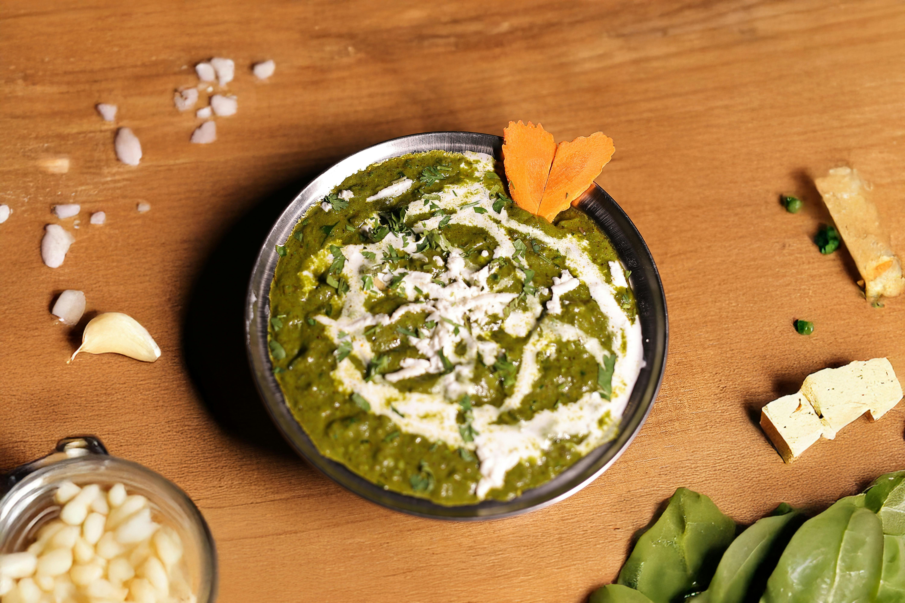

Palak Paneer
About This Recipe
Palak Paneer is a classic North Indian dish made with soft cubes of paneer (Indian cottage cheese) gently simmered in a velvety spinach purée. Flavored with garlic, ginger, and warm spices, it offers a comforting balance of richness and freshness. Its vibrant green hue and creamy texture make it a wholesome and elegant main course, best enjoyed with roti, naan, or jeera rice.
Ingredients
- 250g Paneer (cubed)
- 300g Fresh Spinach (palak)
- 1 Onion (finely chopped)
- 2 Tomatoes (pureed)
- 1 tbsp Ginger-Garlic Paste
- 1 Green Chili (slit, optional)
- 1 tsp Cumin Seeds
- 1/2 tsp Turmeric Powder
- 1 tsp Coriander Powder
- 1/2 tsp Garam Masala
- 1/4 cup Fresh Cream (or 2 tbsp yogurt)
- 2 tbsp Oil/Ghee
- Salt to taste
Instructions
- Prep Spinach: Blanch spinach in boiling water for 2 minutes. Drain, blend into a smooth puree.
- Cook Base: Heat oil/ghee. Sauté cumin seeds, onions until golden. Add ginger-garlic paste, green chili, and tomato puree. Cook until oil separates.
- Spices: Add turmeric, coriander powder, and salt. Mix well.
- Combine: Stir in spinach puree and 1/4 cup water. Simmer for 5 minutes.
- Add Paneer: Gently fold in paneer cubes. Sprinkle garam masala.
- Finish: Add fresh cream/yogurt. Simmer 2 more minutes (avoid boiling after cream).
- Serve: Hot with naan or rice. Garnish with cream if desired.